# load package "tibble"
library(tibble)
# load packages "sits" and "sitsdata"
library(sits)
library(sitsdata)
# set tempdir if it does not exist
tempdir_r <- "~/sitsbook/tempdir/R/intro_examples"
dir.create(tempdir_r, recursive = TRUE)
# set tempdir for Cerrado if it does not exist
tempdir_cerrado_cube <- paste0(tempdir_r, "/cerrado/cube")
tempdir_cerrado <- paste0(tempdir_r, "/cerrado")
dir.create(tempdir_cerrado, recursive = TRUE)
dir.create(tempdir_cerrado_cube, recursive = TRUE)
# set tempdir for Rondonia if it does not exist
tempdir_rondonia <- paste0(tempdir_r, "/rondonia")
dir.create(tempdir_rondonia, recursive = TRUE)2 How to use SITS with real examples
The following scripts show examples of how to use sits for land classification. The first is a classification of a Sentinel-2 tile in Rondonia (Brasil) to detect deforestation and the second a land use and land cover classification of area in the Cerrado biome in Brazil.
Configuration to run the examples in this chapter
# load "pysits" library
from pysits import *
from pathlib import Path
# set tempdir if it does not exist
tempdir_py = Path.home() / "sitsbook/tempdir/Python/intro_examples"
tempdir_rondonia = tempdir_py / "rondonia"
tempdir_rondonia.mkdir(parents=True, exist_ok=True)
tempdir_cerrado = tempdir_py / "cerrado"
tempdir_cerrado_cube = tempdir_cerrado / "cube"
tempdir_cerrado_cube.mkdir(parents=True, exist_ok=True)2.1 Classifying deforestation in Rondonia
The Amazon rainforest has a global importance due to its vast biodiversity and the critical ecosystem services it provides. As one of the most biodiverse regions on Earth, it plays a central role in regulating the planet’s climate and ecological balance. Undisturbed natural forests absorb large amounts of carbon dioxide from the atmosphere, which is vital for mitigating climate change.
Our study area is the state of Rondônia (RO), located in the Brazilian Amazon. Deforestation in Rondonia is fragmented, in part due to the region’s historical occupation by smallholder settlers. This high degree of fragmentation presents significant challenges for automated classification methods, particularly in distinguishing between clear-cut areas and those that are highly degraded. While visual interpreters can rely on their experience and contextual field knowledge, automated approaches must be carefully trained to reach similar levels of accuracy and discernment.
2.1.1 Deforestation samples in the Brazilian Amazon
We used an event-based sample, where an “event” refers to a specific occurrence associated with changes in land cover. For example, deforestation is a process characterized by multiple sequential events. Initially, portions of the forest are removed through selective logging; subsequently, surface fires—often set by poachers—are used to degrade the remaining forest and facilitate the extraction of large trees [1]. The process continues with the manual or mechanized removal of timber, potentially followed by additional fires to clear the area completely [2]. These events were associated with distinct land cover classes to be detected through time series classification, allowing the model to recognize and differentiate between various stages and types of land cover change.
The rondonia20LMR repository provides a dataset for testing machine learning algorithms applied to the mapping and monitoring of deforestation in the Brazilian Amazon. The dataset consists of a regular time series of Sentinel-2 satellite images covering the MGRS 20LMR tile, with 23 temporal instances from January 5 to December 23, 2022, at 16-day intervals. Each instance includes the spectral bands B02, B03, B04, B05, B06, B07, B08, B8A, B11, and B12. The samples contain time series for 792 selected locations, each assigned to one of the following classes: Clear_Cut_Bare_Soil (944), Clear_Cut_Burned_Area (983), Clear_Cut_Vegetation (603), Forest (964), Mountainside_Forest (211), Riparian_Forest (1247), Seasonally_Flooded (731), Water (109) and Wetland (215).
To access the data, it is needed to clone the rondonia20LMR repository from the e-sensing GitHub repository into a local directory. To do this, open a terminal and execute the following commands:
git clone https://github.com/e-sensing/rondonia20LMR.gitAfter cloning the repository, the local directory path can be used to proceed with the example. This path will serve as the reference location for accessing the dataset and continuing with the subsequent steps in the analysis workflow.
In the rondonia20LMR directory, the file deforestation_samples_v18.rds contains time series extracted from Sentinel-2 satellite images over tile 20LMR. These data are automatically made available when the package is loaded. Each time series includes the following columns: longitude, latitude, start date, end date, label, cube, and time series.
# Samples path
samples_path <- "rondonia20LMR/inst/extdata/samples/deforestation_samples_v18.rds"
# Read the Cerrado samples
deforestation_samples_v18 <- readRDS(samples_path)# Samples path
samples_path = "rondonia20LMR/inst/extdata/samples/deforestation_samples_v18.rds"
# Read the Cerrado samples
deforestation_samples_v18 = read_rds(samples_path)As shown in the previous example, the sits_patterns() function from the sits package allows the visualization of the temporal patterns of the classes. In the example below, we show these patterns for each class:
# Generate the temporal patterns
deforestation_samples_v18 |>
sits_select(bands = c("B02", "B8A", "B11")) |>
sits_patterns() |>
plot()# Generate the temporal patterns
plot(
sits_patterns(
sits_select(deforestation_samples_v18, bands = ("B02", "B8A", "B11"))
)
)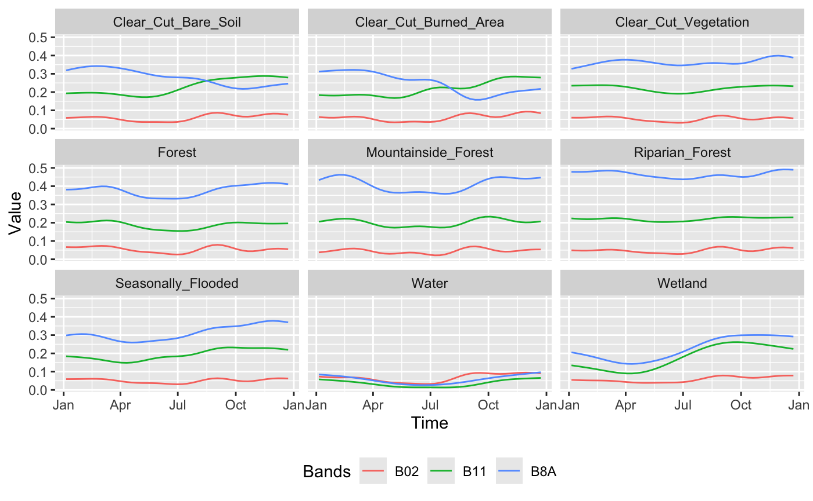
The plot shows the temporal patterns of the different classes throughout the period. The classes Forest, Mountainside_Forest and Riparian_Forest display high values in band B8A (near-infrared), indicating high photosynthetic activity throughout the year. This is a typical characteristic of dense and evergreen vegetation. In contrast, the classes Clear_Cut_Bare_Soil and Clear_Cut_Burned_Area exhibit lower values in band B8A and increasing values in band B11 (shortwave infrared) during the second half of the year, suggesting exposed soil and possible presence of burned or degraded areas. The Seasonally_Flooded class shows seasonal variations in bands B8A and B11, possibly related to the hydrological dynamics of these areas. The Water class shows very low values across all analyzed bands, especially in B8A and B11, reflecting the strong absorption of water in these spectral regions. Finally, the Wetland class shows increasing values in bands B8A and B11 over the course of the year, indicating a possible transition between periods of water saturation and greater vegetation presence.
2.1.2 Build Data Cube and visualize band combination
Let us access the Sentinel images available in the repository. First, it is necessary to define the provider, which in this case is the Microsoft Planetary Computer (MPC). Then, we specify the directory path, as shown below:
# Images path
images_path <- "rondonia20LMR/inst/extdata/images/"
# Access local data cube
cube_20LMR <- sits_cube(
source = "MPC",
collection = "SENTINEL-2-L2A",
data_dir = images_path
)# Images path
images_path = "rondonia20LMR/inst/extdata/images/"
# Access local data cube
cube_20LMR = sits_cube(
source = "MPC",
collection = "SENTINEL-2-L2A",
data_dir = images_path
)The sits_cube() function creates the data cube cube_20LMR with the Sentinel-2 tile 20LMR images available in the repository. Each temporal instance includes the spectral bands B02, B03, B04, B05, B06, B07, B08, B8A, B11 and B12.
# Plot one temporal instance
plot(cube_20LMR, red = "B11", green = "B8A", blue = "B02", date = "2022-07-16")# Plot one temporal instance
plot(cube_20LMR, red = "B11", green = "B8A", blue = "B02", date = "2022-07-16")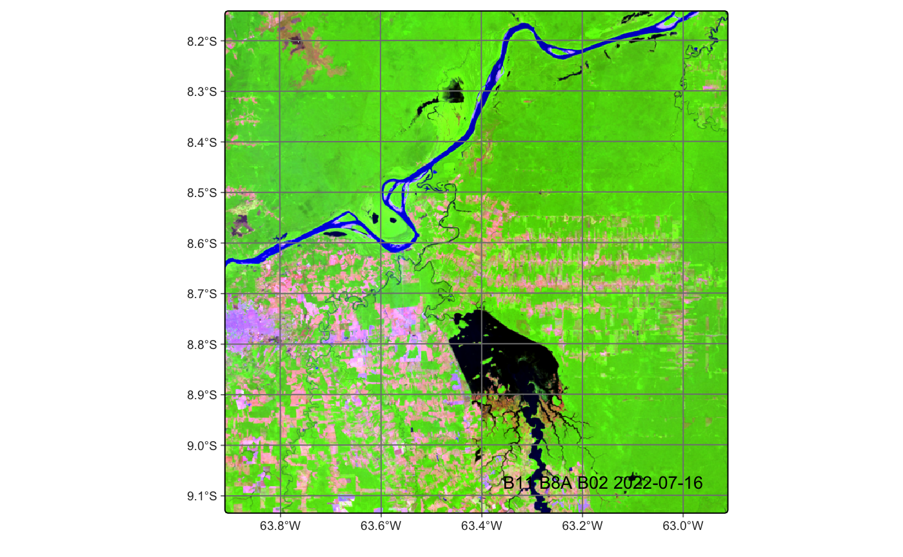
SITS provides the sits_select() function, which filters only the selected bands and dates from a set of time series or a data cube. As shown in the code below:
# Select only bands B02, B8A and B11
samples_3bands <- sits_select(
data = deforestation_samples_v18,
bands = c("B02", "B8A", "B11")
)# Select only bands B02, B8A and B11
samples_3bands = sits_select(
data = deforestation_samples_v18,
bands = ("B02", "B8A", "B11")
)2.1.3 Training a Machine Learning model
The next step in producing a classified map is to train a model. In the code below, we use the sits_train() function to train a Random Forest classifier with the samples containing the B02, B8A and B11 bands:
# Train the selected samples set using Rfor
rfor_model <- sits_train(
samples = samples_3bands,
ml_method = sits_rfor()
)# Train the selected samples set using Rfor
rfor_model = sits_train(
samples = samples_3bands,
ml_method = sits_rfor()
)Random Forest is a classification algorithm based on multiple decision trees, each trained with random subsets of data and attributes. The final prediction is made by majority voting among the trees. This approach reduces overfitting and improves model accuracy. The method also provides the importance of each attribute, which can assist in feature selection. For more details on the use of Random Forest in time series classification of satellite images, see Pelletier et al., (2016) [3]. For more, refer to Random Forest section.
2.1.4 Data cube classification
The next step in producing a classified map is to apply the trained model to the data cube. In the example below, we use the sits_classify() function to classify the cube_20LMR cube using the Random Forest model. The sits_classify() function creates one raster probability map per class, showing the model’s confidence for each pixel. It requires two main arguments: data (a data cube or time series) and ml_model (the trained model). Optional arguments include multicores (number of processing cores), memsize (available memory) and output_dir (output directory).
# Classify the data cube
cube_20LMR_probs <- sits_classify(
data = cube_20LMR,
ml_model = rfor_model,
multicores = 5,
memsize = 8,
output_dir = tempdir_rondonia
)
# Plot the probabilities
plot(cube_20LMR_probs, labels = "Forest", palette = "YlGn")# Classify the data cube
cube_20LMR_probs = sits_classify(
data = cube_20LMR,
ml_model = rfor_model,
multicores = 5,
memsize = 8,
output_dir = tempdir_rondonia
)
# Plot the probabilities
plot(cube_20LMR_probs, labels = "Forest", palette = "YlGn")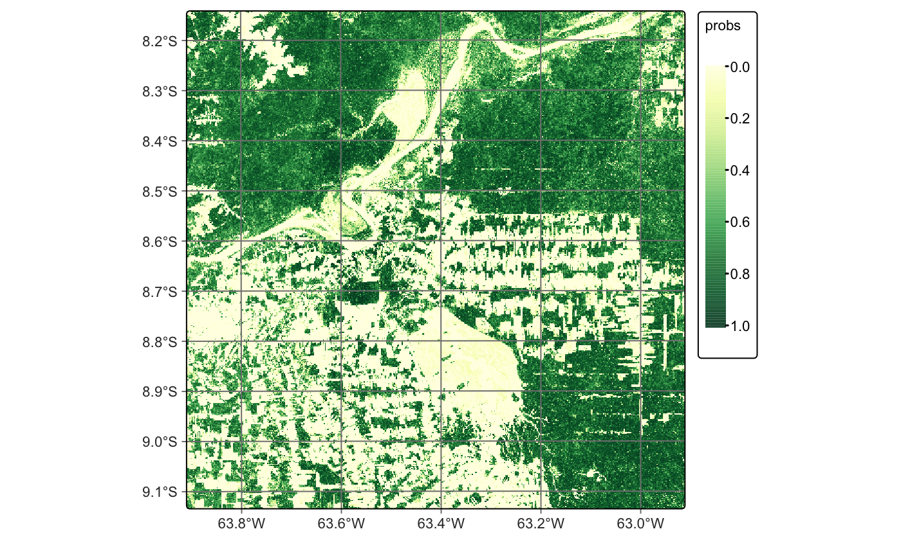
After classification, the probability maps can be visualized, such as for the Forest class. These maps help assess classification uncertainty and can support active learning approaches, as discussed in the section on image classification in data cubes.
We recommend smoothing the results based on the spatial neighborhood of the pixels. This step helps incorporate spatial context and reduce isolated errors, especially in transition areas. The sits_smooth() function performs this task by applying a spatial Bayesian model to adjust predictions using neighboring class probabilities. In the code below, we apply smoothing to the classified cube cube_20LMR_probs.
# Smoothing the probabilities
cube_20LMR_bayes <- sits_smooth(
cube = cube_20LMR_probs,
multicores = 5,
memsize = 8,
output_dir = tempdir_rondonia
)
# Plot the smoothed probabilities
plot(cube_20LMR_bayes, labels = "Forest", palette = "YlGn")# Smoothing the probabilities
cube_20LMR_bayes = sits_smooth(
cube = cube_20LMR_probs,
multicores = 5,
memsize = 8,
output_dir = tempdir_rondonia
)
# Plot the smoothed probabilities
plot(cube_20LMR_bayes, labels = "Forest", palette = "YlGn")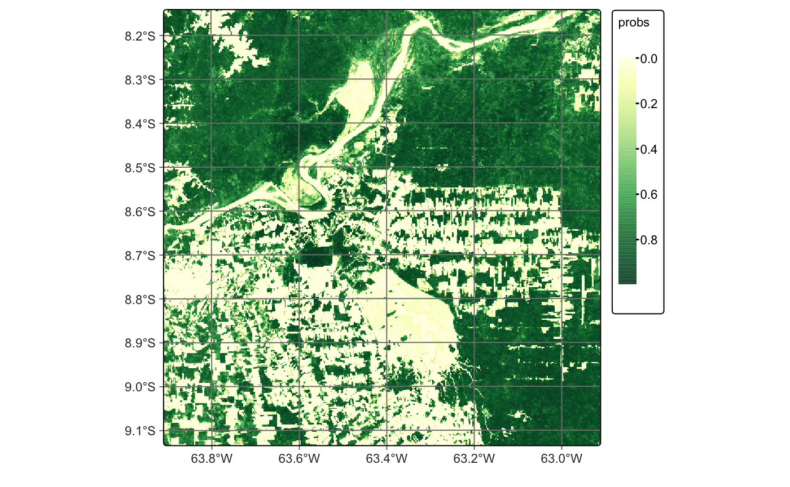
We use the default values for smoothness and window_size, which generally yield good results. However, we recommend tuning these parameters based on the specific needs of your application. Smoothing reduces classification uncertainty by removing isolated low-confidence pixels. In the smoothed map for the Forest class, most outliers are corrected, resulting in a more spatially consistent classification.
The final step is to assign a class label to each pixel by selecting the one with the highest probability value. After spatial smoothing, we use the sits_label_classification() function to generate the final classification map:
cube_20LMR_map <- sits_label_classification(
cube = cube_20LMR_bayes,
multicores = 5,
memsize = 8,
output_dir = tempdir_rondonia
)
# Plot the map
plot(cube_20LMR_map)cube_20LMR_map = sits_label_classification(
cube = cube_20LMR_bayes,
multicores = 5,
memsize = 8,
output_dir = tempdir_rondonia
)
# Plot the map
plot(cube_20LMR_map)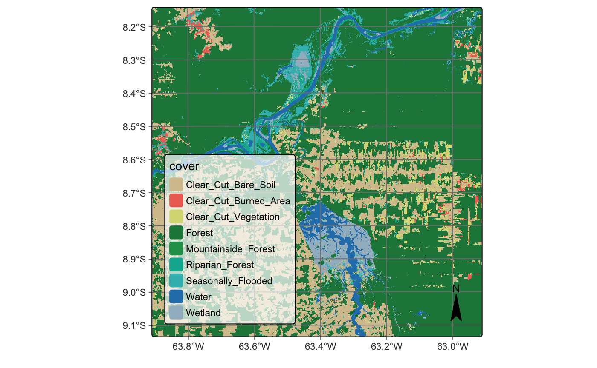
2.2 Land Use and Land cover Map for Brazilian Cerrado
The Cerrado is the second largest biome in Brazil, covering approximately 1.9 million \(km^2\). This tropical savanna ecoregion is characterized by a rich and diverse ecosystem that ranges from grasslands to woodlands. It is home to over 7,000 plant species, many of which are endemic [4]. The biome comprises three major types of natural vegetation: Open Cerrado, predominantly composed of grasses and small shrubs with occasional small trees; Cerrado Sensu Stricto, a typical savanna formation characterized by low, thin-trunked trees with irregular branching; and Cerradão, a dry forest composed of medium-sized trees reaching up to 10–12 meters in height [5], [6]. Despite its ecological importance, large portions of the Cerrado are being rapidly converted to agricultural land, making it one of the world’s most dynamic agricultural frontiers [7]. The primary agricultural activities include cattle ranching, crop farming, and the establishment of planted forests.
In this example, we replicated the results presented in the article “Satellite Image Time Series Analysis for Big Earth Observation Data” [8], using Landsat imagery accessed through the Microsoft Planetary Computer (MPC) platform. We have selected a small region to illustrate all the steps involved in generating a land use and land cover map. The classification period ranges from September 2017 to August 2018, following the agricultural calendar. A temporal resolution of 16 days was used throughout the analysis.
2.2.1 Cerrado samples
Accurate classification requires a high-quality sample set. To obtain reliable training data, we conducted a systematic sampling using a 5 × 5 km grid across the entire Cerrado biome, resulting in the collection of 85,026 samples. The class labels for the training data were derived from three authoritative sources: the 2018 pastureland map provided by Pastagem.org [9], MapBiomas Collection 5 for the year 2018 [10], and land use maps from Brazil’s national mapping agency, IBGE, covering the period from 2016 to 2018 [11]. From the initial set of 85,026 samples, we retained only those for which all three sources agreed on the assigned label. This filtering process resulted in a final dataset of 48,850 sample points. Time series data for these points were extracted from the Landsat-8 data cube. The distribution of samples by class is as follows: Annual Crop (6,887), Cerradão (4,211), Cerrado (16,251), Natural Non-Vegetated (38), Open Cerrado (5,658), Pasture (12,894), Perennial Crop (68), Silviculture (805), Sugarcane (1,775), and Water (263).
# Read the Cerrado samples
data("samples_cerrado_lc8_examples")# Read the Cerrado samples
samples_cerrado_lc8_examples = load_samples_dataset(
name = "samples_cerrado_lc8_examples",
package = "sitsdata"
)SITS package offers a range of functions to support a deeper understanding of the temporal behavior of sample data. One such function is sits_patterns(). In the example below, we showed the temporal patterns of each class.
# Generate the temporal patterns
samples_patterns <- sits_patterns(samples_cerrado_lc8_examples)
# Plot samples patterns
plot(samples_patterns)# Generate the temporal patterns
samples_patterns = sits_patterns(samples_cerrado_lc8_examples)
# Plot samples patterns
plot(samples_patterns)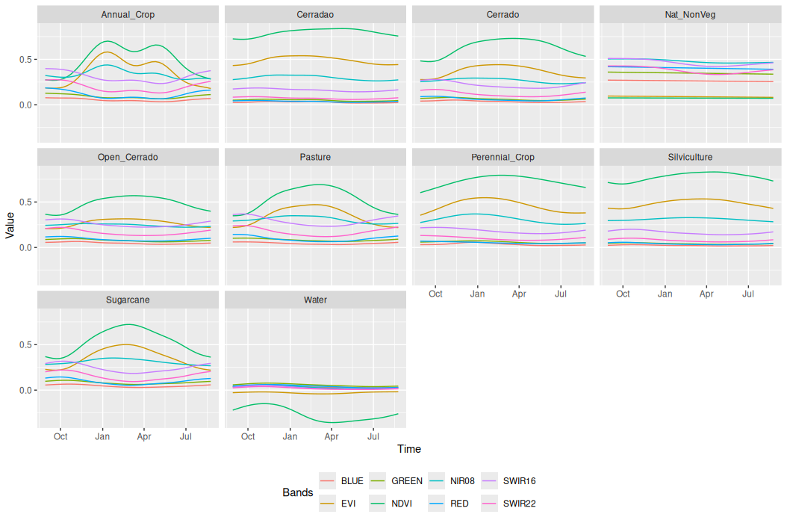
The plot presents the temporal patterns of the sample classes. The pattern observed for the Annual Crop class reflects the typical agricultural dynamics in cropping regions in Cerrado, characterized by the beginning of the season, followed by a maximum in vegetation vigor and then a senescence phase. This pattern repeats twice, indicating the presence of a double-cropping system. In contrast, the Sugarcane class exhibits a semi-perennial pattern. These distinct temporal behaviors can be derived through analysis of the pattern plot.
2.2.2 Acessing Landsat images
Let us start by accessing the Landsat collection through the Microsoft Planetary Computer provider. First, we need to define the region of interest (ROI) where the example will take place. This ROI is then used to select the tiles that intersect with it, as shown below:
# Define a roi for the example
roi <- c(
lon_min = -50.780,
lat_min = -13.392,
lon_max = -50.540,
lat_max = -13.249
)
# Access the Landsat through the MPC
mpc_cube <- sits_cube(
source = "MPC",
collection = "LANDSAT-C2-L2",
bands = c("BLUE", "GREEN", "RED", "NIR08", "SWIR16", "SWIR22", "CLOUD"),
roi = roi,
start_date = "2017-08-29",
end_date = "2018-08-29"
)# Define a roi for the example
roi = dict(
lon_min = -50.780,
lat_min = -13.392,
lon_max = -50.540,
lat_max = -13.249
)
# Access the Landsat through the MPC
mpc_cube = sits_cube(
source = "MPC",
collection = "LANDSAT-C2-L2",
bands = ("BLUE", "GREEN", "RED", "NIR08", "SWIR16", "SWIR22", "CLOUD"),
roi = roi,
start_date = "2017-08-29",
end_date = "2018-08-29"
)The created data cube is not regular (for more details, see Regular Earth observation data cubes), which means that it needs to be regularized before proceeding with the analysis. We recommend copying the images locally before applying the regularization process. Although not mandatory, this is considered a good practice. In cases where the machine does not have sufficient storage space, regularization can be performed directly on the remote data.
In this experiment, we use the sits_cube_copy() function to copy the remote images locally. This function supports the roi parameter, allowing the images to be cropped during the download process. It also supports the multicores parameter, which can significantly improve download speed.
# Copy images locally
mpc_cube <- sits_cube_copy(
cube = mpc_cube,
roi = roi,
multicores = 5,
output_dir = tempdir_cerrado_cube
)# Copy images locally
mpc_cube = sits_cube_copy(
cube = mpc_cube,
roi = roi,
multicores = 5,
output_dir = tempdir_cerrado_cube
)As discussed in the Earth observation data cubes chapter, the SITS package can access both local and remote images. As shown in the code below, we read the images locally after copying them. The only difference between accessing remote and local images is the data_dir parameter, which specifies the directory where the images are stored.
# Access local data cube
mpc_cube <- sits_cube(
source = "MPC",
collection = "LANDSAT-C2-L2",
data_dir = tempdir_cerrado_cube
)# Access local data cube
mpc_cube = sits_cube(
source = "MPC",
collection = "LANDSAT-C2-L2",
data_dir = tempdir_cerrado_cube
)After creating the local data cube, we can proceed with the regularization step using the sits_regularize() function. In this case, we provide the timeline parameter to define a custom timeline, specifically the timeline of the reference samples. This ensures consistency between the data cube and the samples. For more details on the regularization process, please refer to the corresponding chapter in Building regular data cubes.
# Samples timeline
timeline <- sits_timeline(samples_cerrado_lc8_examples)
# Regularize the local cube
cube_reg <- sits_regularize(
cube = mpc_cube,
period = "P16D",
res = 30,
roi = roi,
multicores = 5,
output_dir = tempdir_cerrado,
timeline = timeline
)# Samples timeline
timeline = sits_timeline(samples_cerrado_lc8_examples)
# Regularize the local cube
cube_reg = sits_regularize(
cube = mpc_cube,
period = "P16D",
res = 30,
roi = roi,
multicores = 5,
output_dir = tempdir_cerrado,
timeline = timeline
)2.2.3 Computing vegetation indices
SITS provides a range of functions to perform various operations on a data cube, as highlighted in the Computing NDVI and other spectral indices chapter. One of these functions is sits_apply(), which allows users to generate indices using R expressions. In the example below, we compute NDVI and EVI indices to illustrate how this function can be used for generating vegetation indices.
# Calculate NDVI index using bands NIR08 and RED
cube_reg <- sits_apply(
data = cube_reg,
NDVI = (NIR08 - RED) / (NIR08 + RED),
output_dir = tempdir_cerrado,
multicores = 5,
memsize = 8
)
# Calculate EVI index using bands NIR08 and RED
cube_reg <- sits_apply(
data = cube_reg,
EVI = 2.5 * ((NIR08 - RED) / (NIR08 + 6 * RED - 7.5 * BLUE + 1)),
output_dir = tempdir_cerrado,
multicores = 5,
memsize = 8
)
# Plot NDVI for the second date (2017-09-14)
plot(cube_reg,
band = "NDVI",
dates = "2017-09-14",
palette = "RdYlGn"
)# Calculate NDVI index using bands NIR08 and RED
cube_reg = sits_apply(
data = cube_reg,
NDVI = "(NIR08 - RED) / (NIR08 + RED)",
output_dir = tempdir_cerrado,
multicores = 5,
memsize = 8
)
# Calculate EVI index using bands NIR08 and RED
cube_reg = sits_apply(
data = cube_reg,
EVI = "2.5 * ((NIR08 - RED) / (NIR08 + 6 * RED - 7.5 * BLUE + 1))",
output_dir = tempdir_cerrado,
multicores = 5,
memsize = 8
)
# Plot NDVI for the second date (2017-09-14)
plot(cube_reg,
band = "NDVI",
dates = "2017-09-14",
palette = "RdYlGn"
)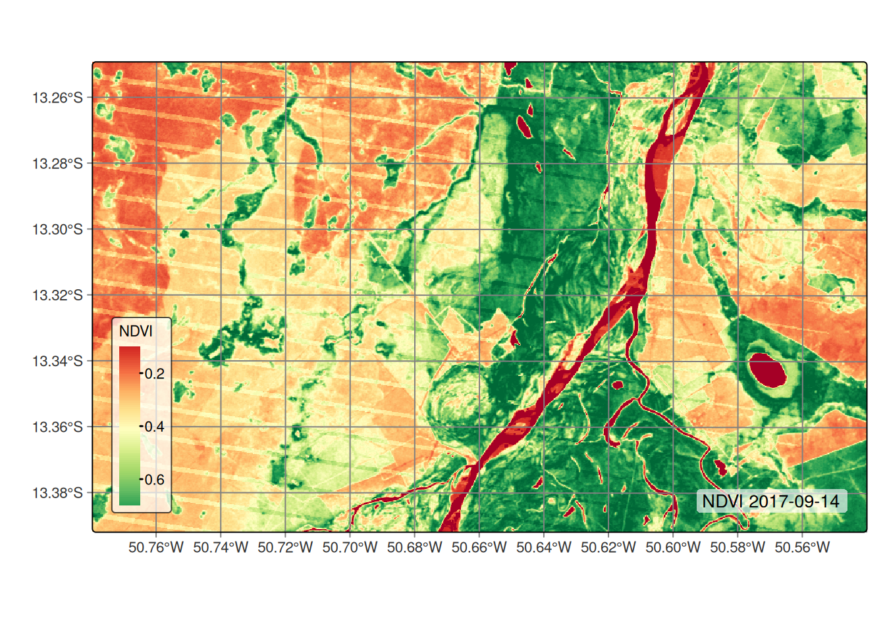
sits_apply().2.2.4 Getting time series
After creating the data cube, the next step is to extract the time series for the sample locations. Since we already have the samples time series for the entire Cerrado, the code below serves only as an example to demonstrate how to extract sample time series from the data cube.
# Extract the time series
samples <- sits_get_data(
cube = cube_reg,
samples = samples_cerrado_lc8_examples,
multicores = 5
)
# Show the tibble with the first three points
print(samples[1:3,])# A tibble: 3 × 7
longitude latitude start_date end_date label cube time_series
<dbl> <dbl> <date> <date> <chr> <chr> <list>
1 -50.8 -13.4 2017-08-29 2018-08-29 Open_Cerrado LANDSAT-C2-… <tibble>
2 -50.8 -13.3 2017-08-29 2018-08-29 Open_Cerrado LANDSAT-C2-… <tibble>
3 -50.8 -13.3 2017-08-29 2018-08-29 Open_Cerrado LANDSAT-C2-… <tibble> # Extract the time series
samples = sits_get_data(
cube = cube_reg,
samples = samples_cerrado_lc8_examples,
multicores = 5
)
# Show the tibble with the first three points
samples[0:2] longitude latitude start_date end_date label cube time_series
0 -50.777271 -13.362440 2017-08-29 2018-08-29 Open_Cerrado LANDSAT-C2-L2 Index BLUE EVI ... RE...
1 -50.777271 -13.317524 2017-08-29 2018-08-29 Open_Cerrado LANDSAT-C2-L2 Index BLUE EVI ... RE...2.2.5 Training a Deep Learning model
The next step in producing a classified map is training a model. This step consists of two phases: tuning the hyperparameters and training the model. Although hyperparameter tuning is not mandatory, it is highly recommended, as it helps identify the most suitable configuration that best fits the sample data. In this case, we used the Temporal Convolutional Neural Network (TempCNN) model [12], which was also used by the original authors of the study. The TempCNN architecture contains three layers of 1D convolutions, using kernels to capture local temporal patterns from time series.
In the code below, we tune the TempCNN model by adjusting the number of convolutional layers, kernel sizes, learning rate, and weight decay. This function may take several minutes to execute, depending on the hardware. The execution time can be significantly reduced by leveraging GPU acceleration. For further details, please refer to the training and running deep learning models section.
tuned_tempcnn <- sits_tuning(
samples = samples_cerrado_lc8_examples,
ml_method = sits_tempcnn(),
params = sits_tuning_hparams(
optimizer = torch::optim_adamw,
cnn_layers = choice(
c(32, 32, 32), c(64, 64, 64), c(128, 128, 128)
),
cnn_kernels = choice(
c(5, 5, 5), c(7, 7, 7), c(9, 9, 9)
),
cnn_dropout_rates = choice(
c(0.2, 0.2, 0.2), c(0.3, 0.3, 0.3), c(0.4, 0.4, 0.4)
),
opt_hparams = list(
lr = uniform(10^-4, 10^-2),
weight_decay = uniform(10^-6, 10^-3)
)
),
trials = 10,
multicores = 8,
progress = TRUE
)
# Printing the best parameters:
tuned_tempcnn# A tibble: 10 × 19
accuracy kappa acc samples_validation cnn_layers cnn_kernels
<dbl> <dbl> <list> <list> <list> <list>
1 0.885 0.852 <cnfsnMtr> <NULL> <language> <language>
2 0.880 0.845 <cnfsnMtr> <NULL> <language> <language>
3 0.877 0.842 <cnfsnMtr> <NULL> <language> <language>
4 0.876 0.841 <cnfsnMtr> <NULL> <language> <language>
5 0.875 0.838 <cnfsnMtr> <NULL> <language> <language>
6 0.871 0.833 <cnfsnMtr> <NULL> <language> <language>
7 0.869 0.831 <cnfsnMtr> <NULL> <language> <language>
8 0.868 0.830 <cnfsnMtr> <NULL> <language> <language>
9 0.868 0.829 <cnfsnMtr> <NULL> <language> <language>
10 0.867 0.828 <cnfsnMtr> <NULL> <language> <language>
# ℹ 13 more variables: cnn_dropout_rates <list>, dense_layer_nodes <list>,
# dense_layer_dropout_rate <list>, epochs <list>, batch_size <list>,
# validation_split <list>, optimizer <list>, opt_hparams <list>,
# lr_decay_epochs <list>, lr_decay_rate <list>, patience <list>,
# min_delta <list>, verbose <list>tuned_mt = sits_tuning(
samples = samples_matogrosso_mod13q1,
ml_method = sits_lighttae,
params = sits_tuning_hparams(
optimizer = "torch::optim_adamw",
cnn_layers = hparam(
"choice", (32, 32, 32), (64, 64, 64), (128, 128, 128)
),
cnn_kernels = hparam(
"choice", (5, 5, 5), (7, 7, 7), (9, 9, 9)
),
cnn_dropout_rates = hparam(
"choice", (0.15, 0.15, 0.15), (0.2, 0.2, 0.2),
(0.3, 0.3, 0.3), (0.4, 0.4, 0.4)
),
opt_hparams = dict(
lr = hparam("uniform", 10**-4, 10**-2),
weight_decay = hparam("uniform", 10**-6, 10**-3)
)
),
trials = 40,
multicores = 6,
progress = False
)
# Printing the best parameters:
tuned_tempcnn# A tibble: 10 × 19
accuracy kappa acc samples_validation cnn_layers cnn_kernels
<dbl> <dbl> <list> <list> <list> <list>
1 0.885 0.852 <cnfsnMtr> <NULL> <language> <language>
2 0.880 0.845 <cnfsnMtr> <NULL> <language> <language>
3 0.877 0.842 <cnfsnMtr> <NULL> <language> <language>
4 0.876 0.841 <cnfsnMtr> <NULL> <language> <language>
5 0.875 0.838 <cnfsnMtr> <NULL> <language> <language>
6 0.871 0.833 <cnfsnMtr> <NULL> <language> <language>
7 0.869 0.831 <cnfsnMtr> <NULL> <language> <language>
8 0.868 0.830 <cnfsnMtr> <NULL> <language> <language>
9 0.868 0.829 <cnfsnMtr> <NULL> <language> <language>
10 0.867 0.828 <cnfsnMtr> <NULL> <language> <language>
# ℹ 13 more variables: cnn_dropout_rates <list>, dense_layer_nodes <list>,
# dense_layer_dropout_rate <list>, epochs <list>, batch_size <list>,
# validation_split <list>, optimizer <list>, opt_hparams <list>,
# lr_decay_epochs <list>, lr_decay_rate <list>, patience <list>,
# min_delta <list>, verbose <list>We can now take the best-fitting parameters and use them to train our deep learning model. The selected hyperparameters were 64 convolutional filters, a kernel size of 7, and a dropout rate of 0.3.
2.2.6 Training a deep learning model
set.seed(03022024)
# Train using tempCNN
tempcnn_model <- sits_train(
samples_cerrado_lc8_examples,
sits_tempcnn(
optimizer = torch::optim_adamw,
cnn_layers = c(64, 64, 64),
cnn_kernels = c(7, 7, 7),
cnn_dropout_rates = c(0.3, 0.3, 0.3),
epochs = 50,
batch_size = 256,
validation_split = 0.2,
opt_hparams = list(lr = 0.002024501,
weight_decay = 0.0006641582),
verbose = TRUE
)
)
# Show training evolution
plot(tempcnn_model)r_set_seed(03022024)
# Train using tempCNN
tempcnn_model = sits_train(
samples_cerrado_lc8_examples,
sits_tempcnn(
optimizer = "torch::optim_adamw",
cnn_layers = (64, 64, 64),
cnn_kernels = (7, 7, 7),
cnn_dropout_rates = (0.3, 0.3, 0.3),
epochs = 50,
batch_size = 256,
validation_split = 0.2,
opt_hparams = dict(lr = 0.002024501,
weight_decay = 0.0006641582),
verbose = True
)
)
# Show training evolution
plot(tempcnn_model)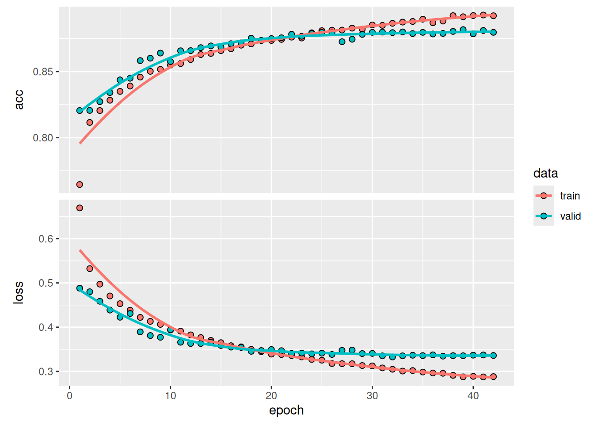
2.2.7 Data cube classification
The final step is to produce the probability map, which involves applying the trained model to classify the time series within the data cube.
# Classify the raster image
cerrado_probs <- sits_classify(
data = cube_reg,
ml_model = tempcnn_model,
multicores = 5,
memsize = 8,
output_dir = tempdir_cerrado
)
# Plot the probability cube for class Forest
plot(cerrado_probs, labels = "Cerrado", palette = "BuGn")# Classify the raster image
cerrado_probs = sits_classify(
data = cube_reg,
ml_model = tempcnn_model,
multicores = 5,
memsize = 8,
output_dir = tempdir_cerrado
)
# Plot the probability cube for class Forest
plot(cerrado_probs, labels = "Cerrado", palette = "BuGn")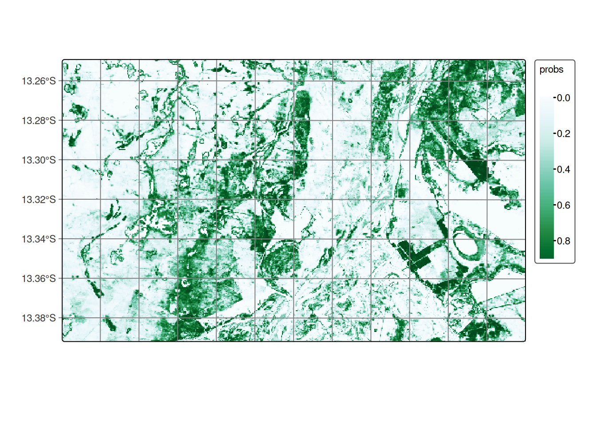
After generating the probability map, we highly recommend applying a smoothing operation based on the spatial neighborhood. This step is essential for incorporating spatial context into the classification results. We used the default values for smoothness and window_size, which serve as a solid starting point. However, we encourage users to adjust these parameters according to the specific needs of their application. For more about the sits_smooth() function, please refer to Bayesian smoothing for classification post-processing chapter.
# Perform spatial smoothing
cerrado_bayes <- sits_smooth(
cube = cerrado_probs,
multicores = 5,
memsize = 8,
output_dir = tempdir_cerrado
)
# Plot the smooth cube for class Forest
plot(cerrado_bayes, labels = "Cerrado", palette = "BuGn")# Perform spatial smoothing
cerrado_bayes = sits_smooth(
cube = cerrado_probs,
multicores = 5,
memsize = 8,
output_dir = tempdir_cerrado
)
# Plot the smooth cube for class Forest
plot(cerrado_bayes, labels = "Cerrado", palette = "BuGn")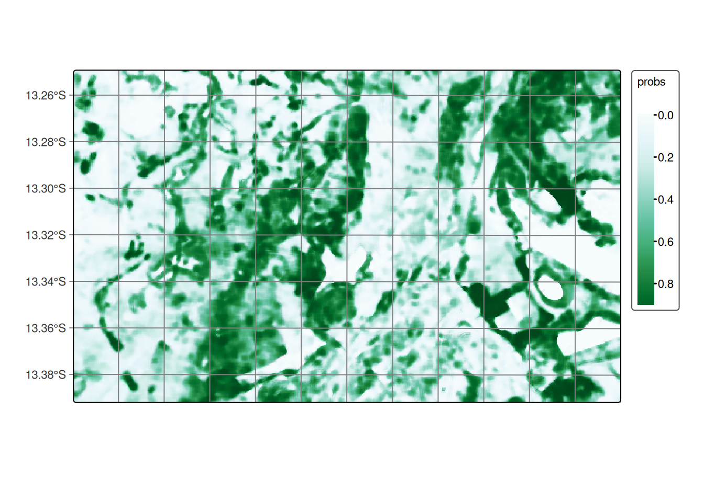
The final step is labeling the probability map. This involves selecting the highest probability values and assigning class labels to them based on the sample classes.
# Label the probability file
cerrado_map <- sits_label_classification(
cube = cerrado_bayes,
output_dir = tempdir_cerrado
)
# Plot the land use and land cover map
plot(cerrado_map)# Label the probability file
cerrado_map = sits_label_classification(
cube = cerrado_bayes,
output_dir = tempdir_cerrado
)
# Plot the land use and land cover map
plot(cerrado_map)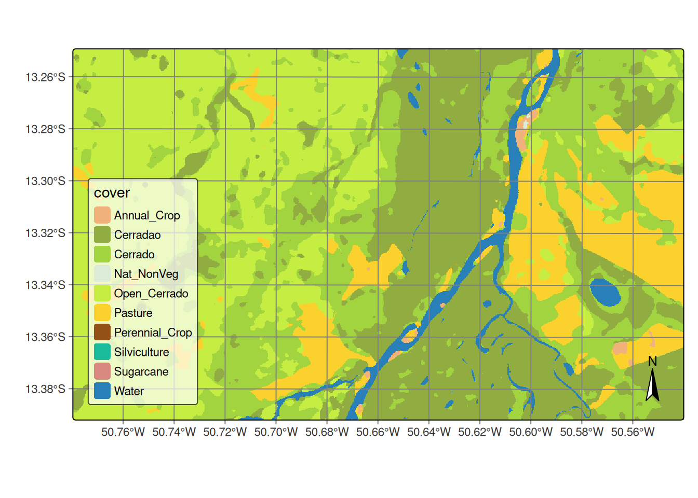
2.2.8 Accuracy assessment of classified images
So far, we have generated the classification for a small region to demonstrate how the SITS package can be applied in a real-world scenario. For the validation step, we extended the classification to the entire Cerrado biome using the reference samples provided by Simoes et al. (2021) [8], in order to evaluate the results with real and independently collected data.
we used 5402 validation points, which are independent of the training set used in the classification. They were interpreted by five specialists using high resolution images from the same period of the classification. For the assessment, we merged the labels Cerradao, Cerrado, and Open Cerrado into one label called Cerrado. We also did additional sampling to reach a minimal number of samples for the classes Natural Non Vegetated, Perennial Crop, and Water.
# Cerrado classification file
cerrado_path = system.file(
"/extdata/Cerrado-Class-2017-2018-Mosaic", package = "sitsdata"
)
# Read the probability file
cerrado_map <- sits_cube(
source = "MPC",
collection = "LANDSAT-C2-L2",
bands = "class",
labels = c("1" = "Annual_Crop", "3" = "Cerrado", "4" = "Nat_NonVeg",
"6" = "Pasture", "7" = "Perennial_Crop", "8" = "Silviculture",
"9" = "Sugarcane", "10" = "Water"),
data_dir = cerrado_path
)
# Plot Cerrado map
plot(cerrado_map)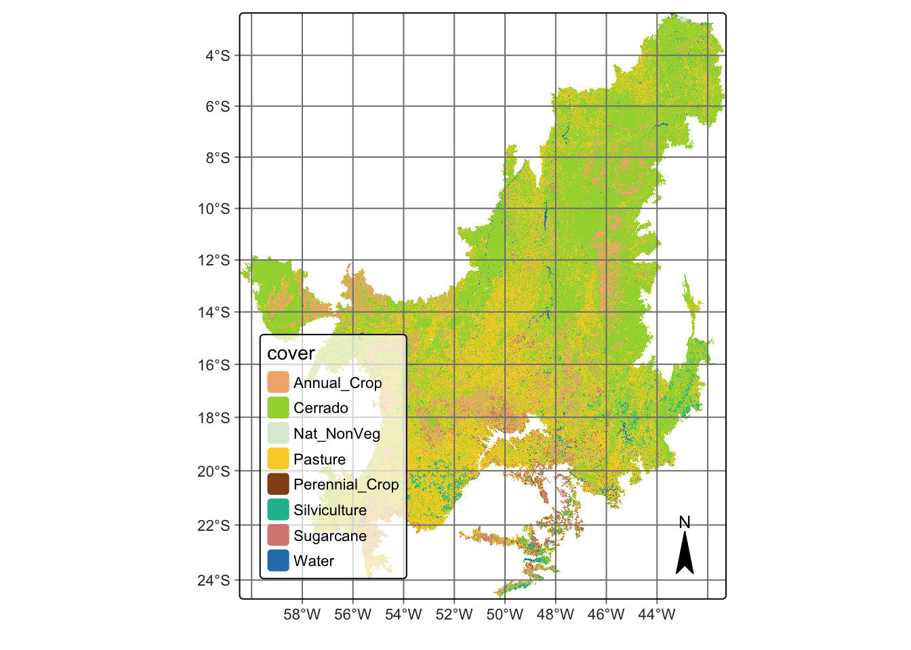
# Cerrado classification file
cerrado_path = r_package_dir(
content_dir = "/extdata/Cerrado-Class-2017-2018-Mosaic",
package = "sitsdata"
)
# Read the probability file
cerrado_map = sits_cube(
source = "MPC",
collection = "LANDSAT-C2-L2",
bands = "class",
labels = {"1": "Annual_Crop", "3": "Cerrado", "4": "Nat_NonVeg",
"6": "Pasture", "7":"Perennial_Crop", "8": "Silviculture",
"9": "Sugarcane", "10": "Water"},
data_dir = cerrado_path
)
# Plot Cerrado map
plot(cerrado_map)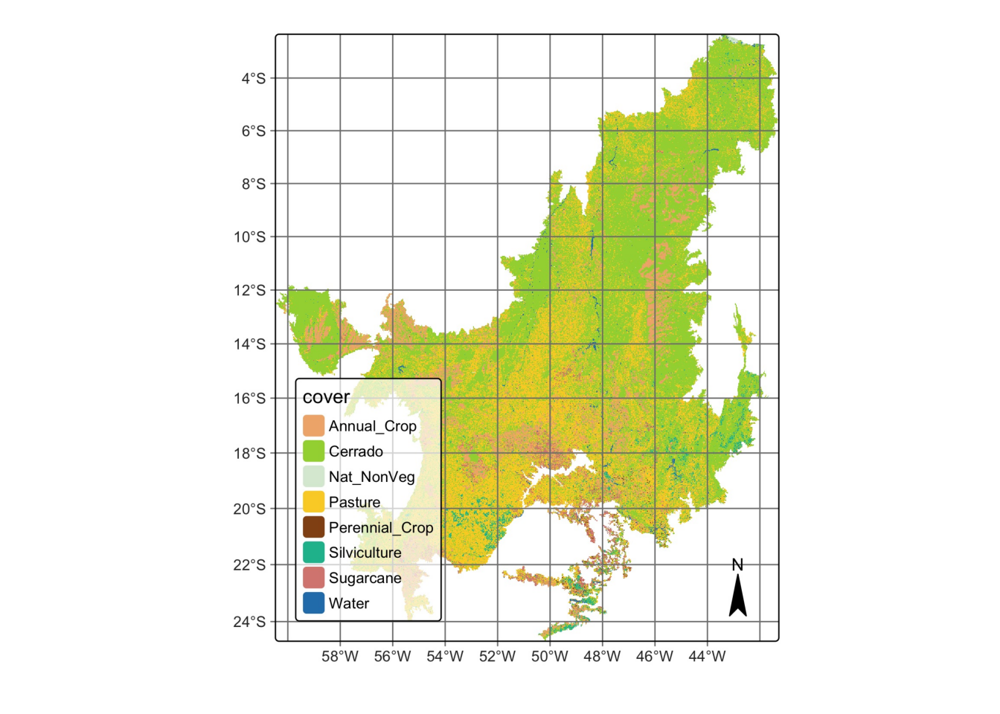
We used the sits implementation of the area-weighted technique [13] to provide an unbiased estimator for the overall accuracy and the total area of each class based on the reference samples (see Map accuracy assessment). The classification accuracies are shown below. The overall accuracy of the classification was 0.83.
# Get ground truth points
valid_csv <- system.file("extdata/csv/cerrado_lc8_validation.csv",
package = "sitsdata"
)
# Calculate accuracy according to Olofsson's method
area_acc <- sits_accuracy(
data = cerrado_map,
validation = valid_csv,
multicores = 4
)
# Print the area estimated accuracy
area_accArea Weighted Statistics
Overall Accuracy = 0.83
Area-Weighted Users and Producers Accuracy
User Producer
Annual_Crop 0.87 0.82
Cerrado 0.91 0.86
Nat_NonVeg 0.94 0.27
Pasture 0.69 0.79
Perennial_Crop 0.71 0.38
Silviculture 0.82 0.80
Sugarcane 0.72 0.89
Water 0.94 0.71
Mapped Area x Estimated Area (ha)
Mapped Area (ha) Error-Adjusted Area (ha) Conf Interval (ha)
Annual_Crop 22007606.5 23336717.8 1111777.8
Cerrado 116681183.2 122786133.9 2085647.1
Nat_NonVeg 261234.6 911153.3 353704.1
Pasture 64237851.8 56008536.3 2155334.6
Perennial_Crop 650393.2 1215456.5 382474.6
Silviculture 4120936.3 4179525.9 506675.9
Sugarcane 4660479.4 3738766.0 508507.4
Water 1357575.1 1800970.6 320731.0# Get ground truth points
valid_csv = r_package_dir(
content_dir = "extdata/csv/cerrado_lc8_validation.csv",
package = "sitsdata"
)
# Calculate accuracy according to Olofsson's method
area_acc = sits_accuracy(
data = cerrado_map,
validation = valid_csv,
multicores = 4
)
# Print the area estimated accuracy
area_accArea Weighted Statistics
Overall Accuracy = 0.83
Area-Weighted Users and Producers Accuracy
User Producer
Annual_Crop 0.87 0.82
Cerrado 0.91 0.86
Nat_NonVeg 0.94 0.27
Pasture 0.69 0.79
Perennial_Crop 0.71 0.38
Silviculture 0.82 0.80
Sugarcane 0.72 0.89
Water 0.94 0.71
Mapped Area x Estimated Area (ha)
Mapped Area (ha) Error-Adjusted Area (ha) Conf Interval (ha)
Annual_Crop 22007606.5 23336717.8 1111777.8
Cerrado 116681183.2 122786133.9 2085647.1
Nat_NonVeg 261234.6 911153.3 353704.1
Pasture 64237851.8 56008536.3 2155334.6
Perennial_Crop 650393.2 1215456.5 382474.6
Silviculture 4120936.3 4179525.9 506675.9
Sugarcane 4660479.4 3738766.0 508507.4
Water 1357575.1 1800970.6 320731.03 Conclusion
These examples demonstrate the complete workflow for generating a classified land use and land cover map using the SITS package. The process includes data cube creation, sample extraction, model training with machine and deep learning approaches, classification, and post-processing steps such as smoothing and labeling. By following these steps, users can apply the SITS package to produce accurate and spatially coherent maps from satellite image time series, supporting environmental monitoring and land change analysis.
[1]
D. C. Nepstad et al., “Large-scale impoverishment of Amazonian forests by logging and fire,” Nature, vol. 398, no. 6727, pp. 505–508, 1999, doi: 10.1038/19066.
[2]
J. J. Gerwing, “Degradation of forests through logging and fire in the eastern Brazilian Amazon,” Forest Ecology and Management, vol. 157, no. 1, pp. 131–141, 2002, doi: 10.1016/S0378-1127(00)00644-7.
[3]
C. Pelletier, S. Valero, J. Inglada, N. Champion, and G. Dedieu, “Assessing the robustness of Random Forests to map land cover with high resolution satellite image time series over large areas,” Remote Sensing of Environment, vol. 187, pp. 156–168, 2016, doi: 10.1016/j.rse.2016.10.010.
[4]
C. A. Klink and R. B. Machado, “Conservation of the Brazilian cerrado,” Conservation Biology, vol. 19, no. 3, pp. 707–713, 2005.
[5]
R. Goodland, “A Physiognomic Analysis of the ‘Cerrado’ Vegetation of Central Brasil,” The Journal of Ecology, vol. 59, no. 2, p. 411, 1971, doi: 10.2307/2258321.
[6]
K. Del-Claro and H. M. Torezan-Silingardi, “The study of biotic interactions in the Brazilian Cerrado as a path to the conservation of biodiversity,” Anais da Academia Brasileira de Ciências, vol. 91, no. suppl 3, p. e20180768, 2019, doi: 10.1590/0001-3765201920180768.
[7]
B. M. T. Walter, “Fitofisionomias do bioma Cerrado: síntese terminológica e relações florísticas.” PhD thesis, Universidade de Brasilia, 2006.
[8]
R. Simoes et al., “Satellite Image Time Series Analysis for Big Earth Observation Data,” Remote Sensing, vol. 13, no. 13, p. 2428, 2021, doi: 10.3390/rs13132428.
[9]
L. Parente, V. Mesquita, F. Miziara, L. Baumann, and L. Ferreira, “Assessing the pasturelands and livestock dynamics in Brazil, from 1985 to 2017: A novel approach based on high spatial resolution imagery and Google Earth Engine cloud computing,” Remote Sensing of Environment, vol. 232, p. 111301, 2019, doi: 10.1016/j.rse.2019.111301.
[10]
C. M. Souza Jr et al., “Reconstructing three decades of land use and land cover changes in brazilian biomes with landsat archive and earth engine,” Remote Sensing, vol. 12, no. 17, p. 2735, 2020.
[11]
IBGE, “Monitoramento da cobertura e uso da terra do Brasil: 2016–2018,” Brazilian Institute of Geography and Statistics, Rio de Janeiro, {Book} 101703, 2020. [Online]. Available: https://biblioteca.ibge.gov.br/index.php/biblioteca-catalogo?view=detalhes&id=2101703.
[12]
C. Pelletier, G. I. Webb, and F. Petitjean, “Temporal Convolutional Neural Network for the Classification of Satellite Image Time Series,” Remote Sensing, vol. 11, no. 5, 2019.
[13]
P. Olofsson, G. M. Foody, S. V. Stehman, and C. E. Woodcock, “Making better use of accuracy data in land change studies: Estimating accuracy and area and quantifying uncertainty using stratified estimation,” Remote Sensing of Environment, vol. 129, pp. 122–131, 2013, doi: 10.1016/j.rse.2012.10.031.